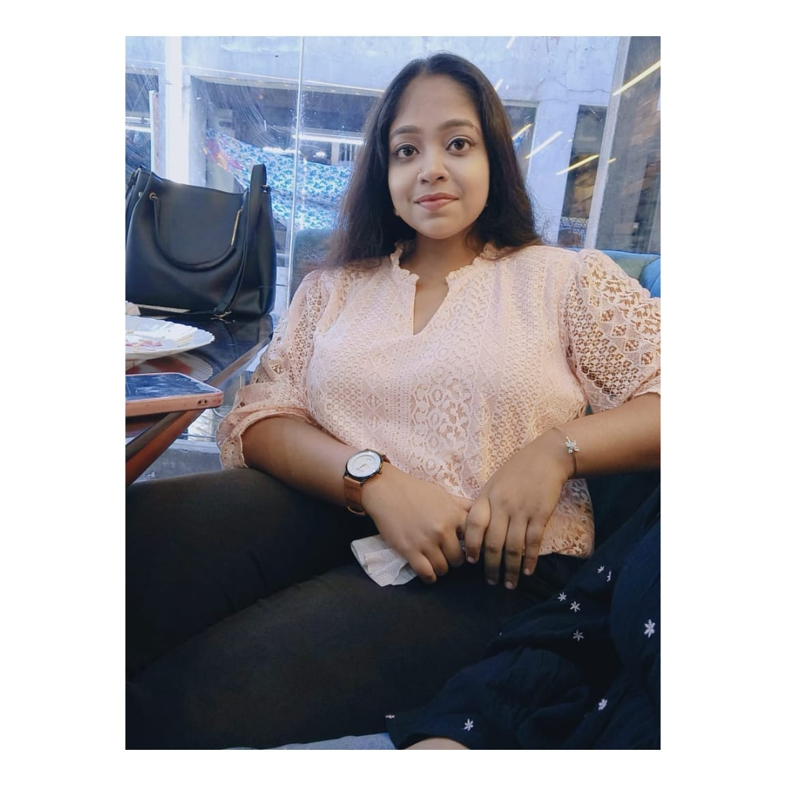

Hello!! this is a simple introductory page for introducing myself and my educational background. Here I will share information about my journey and experiences.
I am an enthusiastic and curious learner with a strong commitment to continuous growth, academic consistency, and personal development. I have always been eager to explore unfamiliar concepts, embrace new challenges, and turn every learning opportunity into a chance to grow.
Currently, I am exploring the dynamic world of Software Development, Artificial Intelligence, and Data Science, discovering my areas of interest while strengthening my technical skills and practical knowledge. Through various projects and hands-on experiences, I am continuously working towards bridging the gap between learning and real-world application.
Beyond technical learning, I value discipline, adaptability, collaboration, and effective communication. I enjoy working in teams, exchanging ideas, coordinating with others, and contributing to projects that encourage innovation and collective growth.
I believe that growth is a continuous process, and I am always eager to learn, experiment, build, and improve. My portfolio showcases some of the projects and experiences that reflect my journey so far.
Feel free to explore my projects and professional profiles through the links provided. I am always open to meaningful collaborations, new opportunities, and exciting projects that challenge me to think differently and grow further.